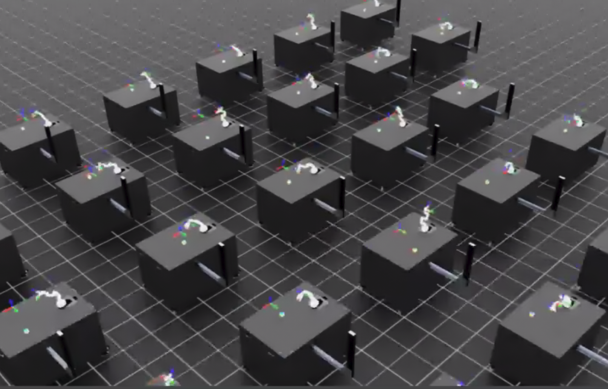
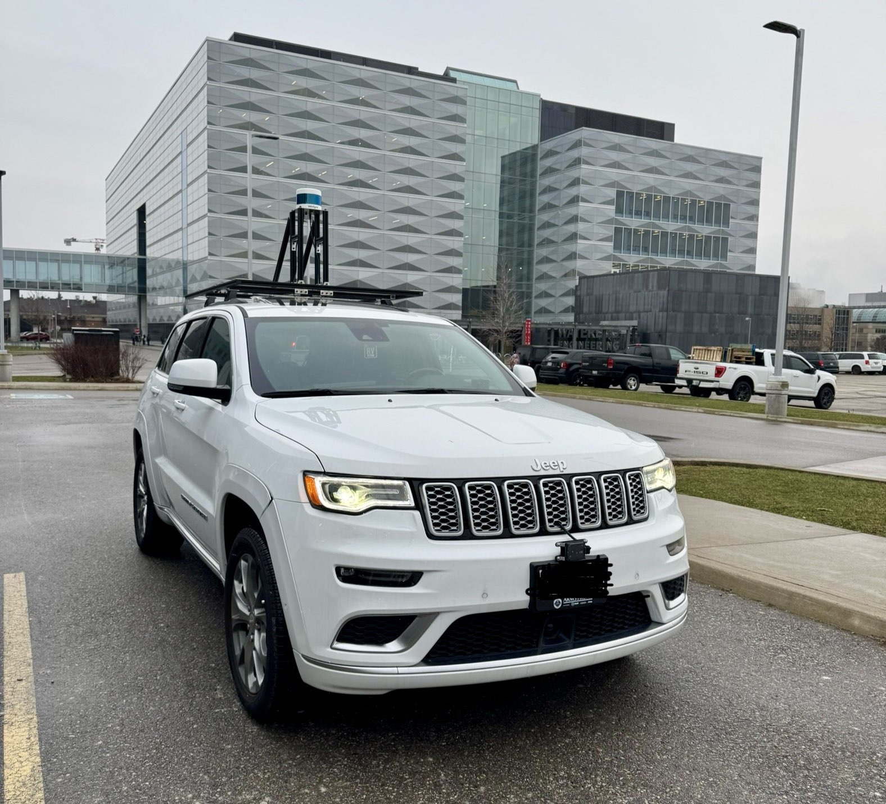
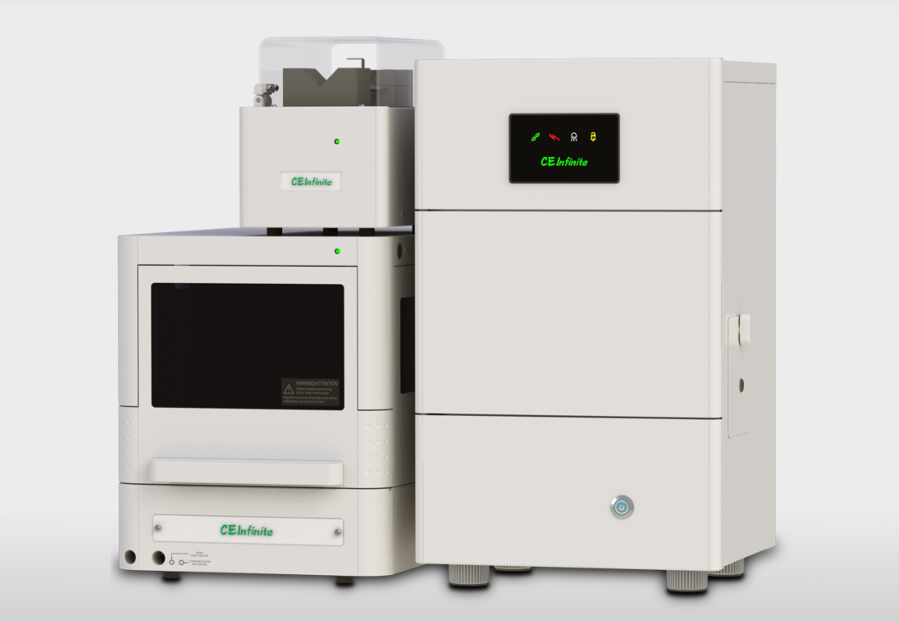
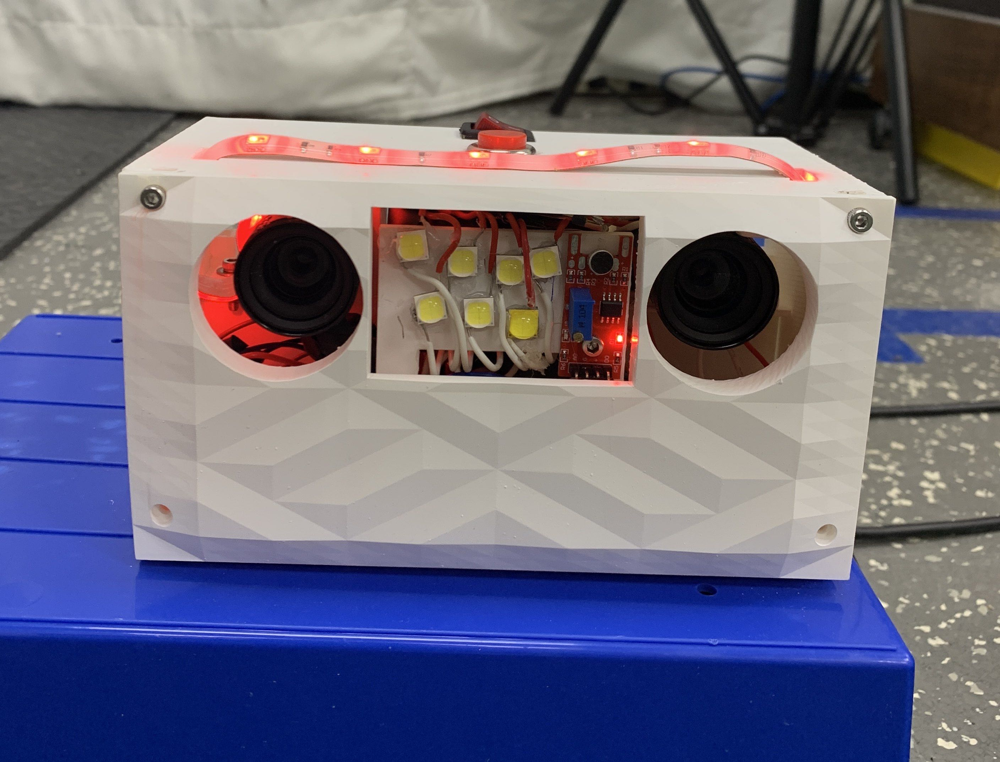
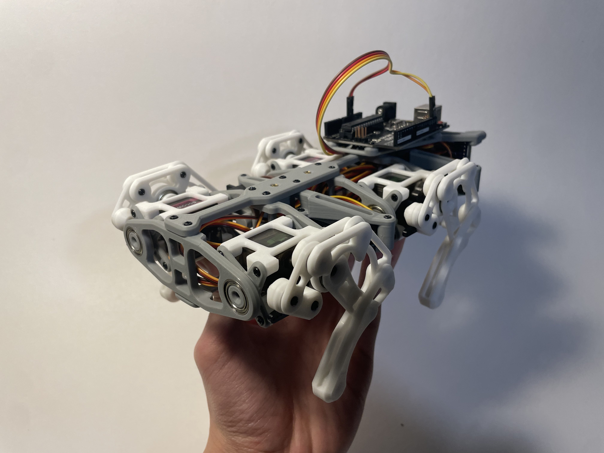
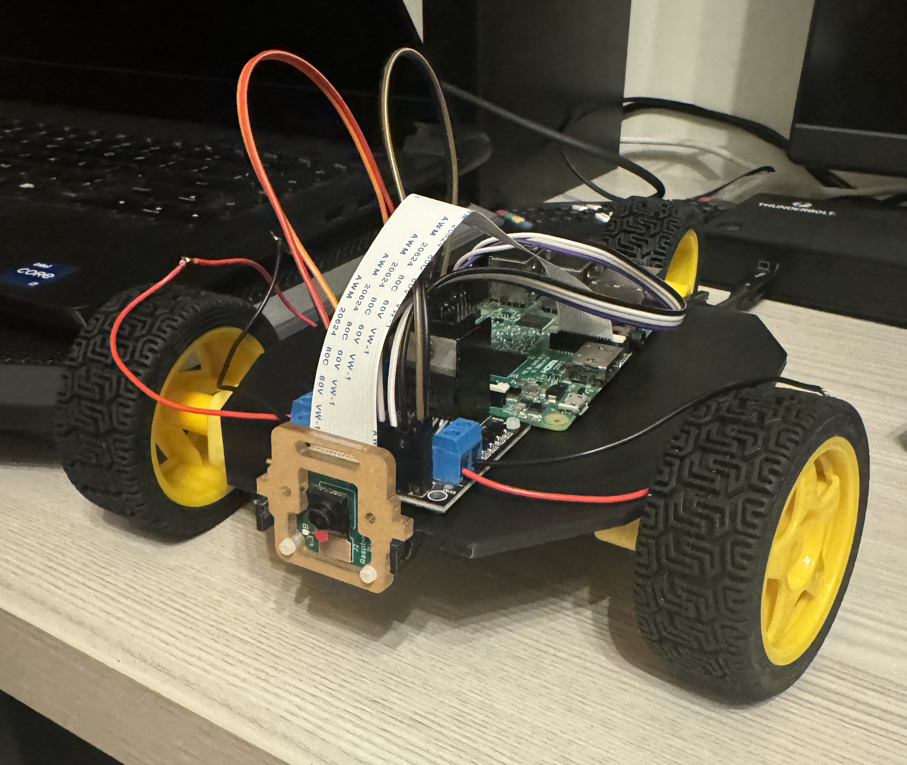

I'm currently a mechatronics engineering undergrad @ The University of Waterloo.
Hi! My name is Ethan and I am going into my 4a term studying my undergrad in mechatronics engineering at the University of Waterloo.
Currently, I am in Singapore doing exchange at Nanyang Technical University.
I like to play baseball and badminton.
I also really like autonomous stuff and robotics.
I do not have much artistic taste, as you can see by my portfolio.
ArenaX Labs is a startup with goals of a RL competition platform. Created and evaluated robotic environments for the competition. Developed modular RL training pipeline in PyTorch. Researched SOTA RL models applied to internal robotic applications. First time working with robotics professionally, amazing experience. Here is a picture of robotic training in IsaacLab.


Worked with Autoware and ROS2 to interface with this Jeep Cherokee to make it self driving. I also worked with an Indro drone and interfaced sensor and tested with it. Ran some autonomy, perception and localization algorithms. Cool to see SLAM working in real life.
Learned a lot about embedded systems. Worked primarly on their custom STM32 based-chip and installed a custom OS on it. Worked on interfacing with different sensors and drivers written in C and C++. Medical devices are complicated, most the pictures from the internship are NDA'd, so here is a picture of the devices.


My first internship. I was in Epson's applied research branch and worked on a golf launch monitor. Developed algorithms to capture golf ball movements and calculate their spin and velocity. First exposure to machine vision with OpenCV and C++. Built this prototype.

Integrated MuJoCo simulation pipeline to a state of the art Vision-Language-Action model (OpenVLA). First time working with a large model, and requires heavy computation. Used GCP VM to run.
I built this quadruped with my roommate. He worked primarily on the mechanical robot, I worked more on the autonomy. I used RL and PyTorch to train the quadruped on how to walk. I created a simulation of the robot using PyBullet and did the sim-to-real transfer using ROS2.


I used OpenCV and C++ to program a robot running an Monocular ORB-SLAM algorithm. Algorithm ran on a Raspberry Pi 3, using an Arducam. The robot was designed with OnShape and with a L298N motor controller driving the motors. ORB-SLAM created a map of the area the robot covered.